Режимы наложения слоёв в Procreate

В начале работы с Procreate не совсем понятно, зачем нужны режимы наложения слоёв и как их использовать. В этой статье я подробно расскажу о них и покажу на примерах. Режимы помогают создавать сложные световые эффекты, тени и текстуры без лишней прорисовки.
С чего начать и где они находятся
Вы создали холст и начали рисовать иллюстрацию. Режимы наложения находятся в слоях: нажмите на букву N у выбранного слоя. Там есть ползунок непрозрачности, а ниже — 26 режимов. Я разделю их по эффектам и покажу на примерах, как их применять.
По умолчанию стоит Обычный режим, в котором мы всегда рисуем. Краска просто ложится на нижний слой без эффектов и, в зависимости от укрывистости кисти, полностью перекрывает нижнюю краску или немного её просвечивает.
Затемняющие режимы
Работают по принципу замены светлых пикселей тёмными. Полезны для усиления теней и глубины.
Умножение
Затемняет цвета, но при этом их «просвечивает», как цветное стекло поверх рисунка. Отлично подходит для текстур: положите текстуру холста над всеми слоями, поставьте «Умножение», и появится эффект рисунка по холсту. Помните, что режим затемняющий, поэтому цвета иллюстрации станут глубже.
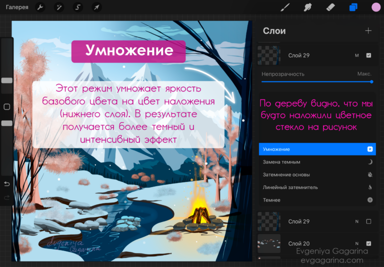
Замена тёмным
Сравнивает цвета верхнего и нижнего слоя и смешивает их, оставляя тёмные и убирая светлые. Подходит для мягкого затемнения и теней, но меняет насыщенность — это регулируется ползунком непрозрачности.
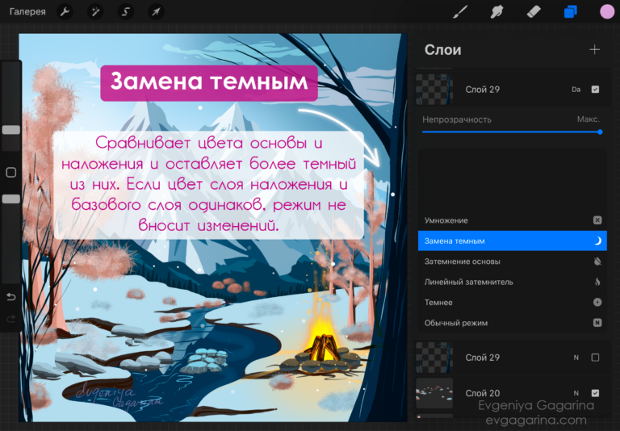
Темнее
Берёт более тёмный цвет из двух слоёв, не смешивая их. Если цвета одинаковые, изменений не будет. Помогает сохранить контуры объектов и выбирать тёмные цвета без полупрозрачности.
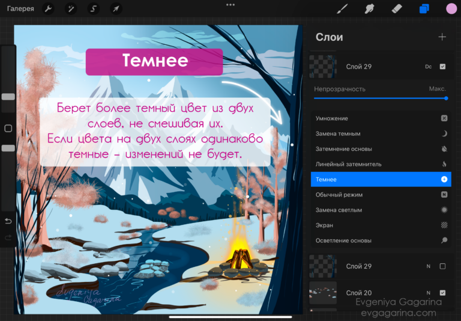
Затемнение основы
Затемняет нижний слой и усиливает контраст, делая цвета насыщеннее и добавляя цветной оттенок. Подходит для глубоких цветных теней, винтажного эффекта и затемнения с сохранением насыщенности.
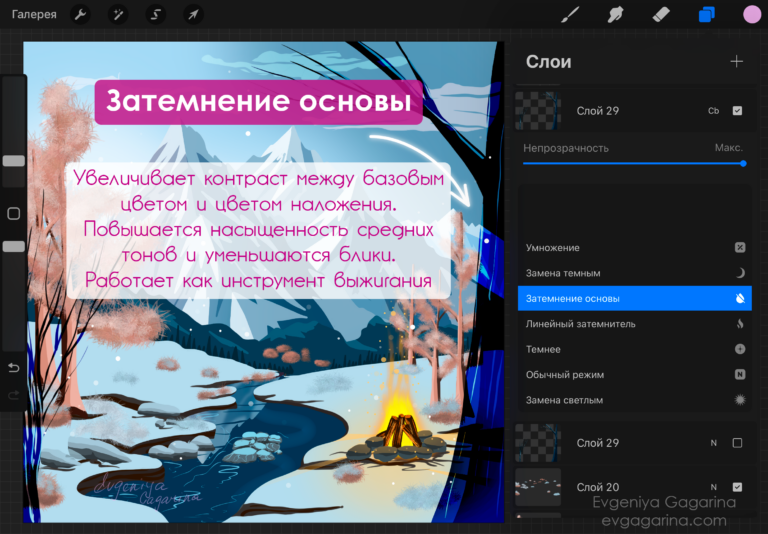
Линейный затемнитель
Затемняет сильнее, чем «Затемнение основы», но результат более плавный. Хорош для мягких реалистичных теней. Например, синий поверх жёлтого даст приглушённый зелёный без резкого контраста.
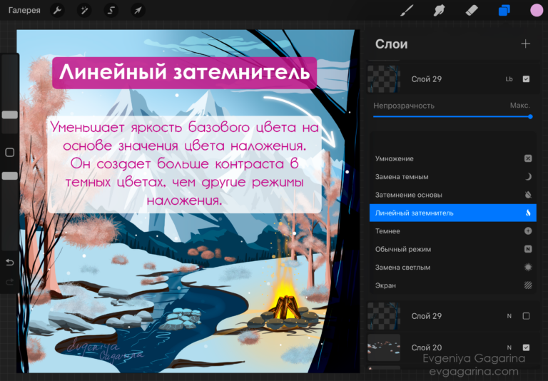
Осветляющие режимы
Заменяют тёмные пиксели светлыми и делают изображение ярче. Используются для бликов, световых эффектов и осветления деталей.
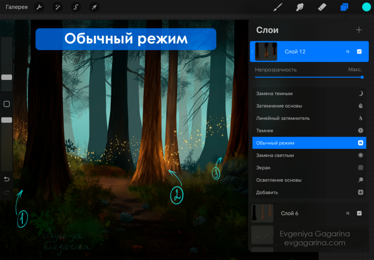
Замена светлым
Оставляет только самые светлые пиксели из двух слоёв. Хорошо показывает лёгкие блики, свечение и отражения.
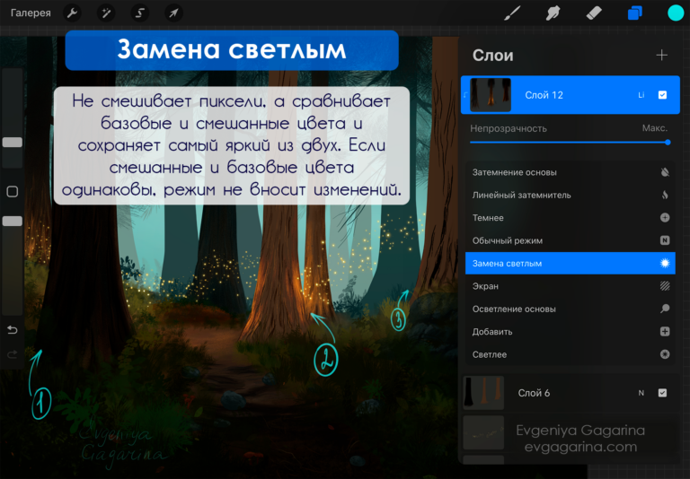
Экран (Осветление)
Осветляет и смешивает цвета, создавая мягкий эффект. Идеален для бликов и освещения, если рисовать тем же цветом, что и на нижнем слое.
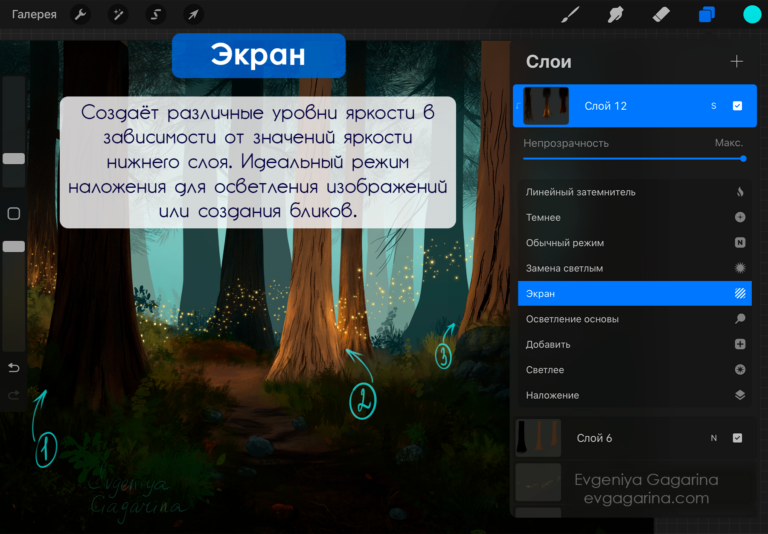
Осветление основы
Осветляет нижний слой, делает цвета ярче и насыщеннее, усиливает контраст. Подходит для неона, лампочек, отражённого света и бликов на коже.
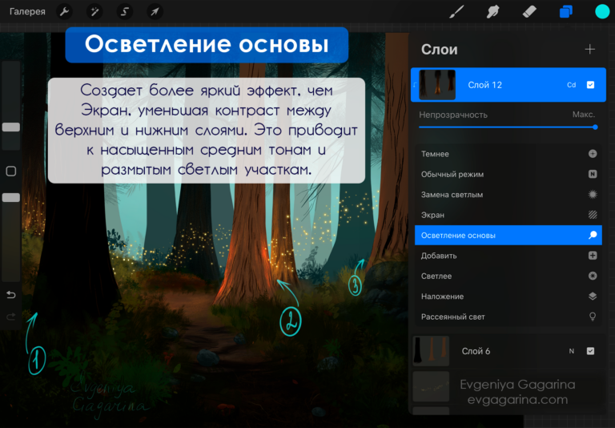
Добавить
Даёт ещё более сильный результат: цвета становятся сверхъяркими, появляется интенсивное свечение. Подходит для огня, неона и бликов.
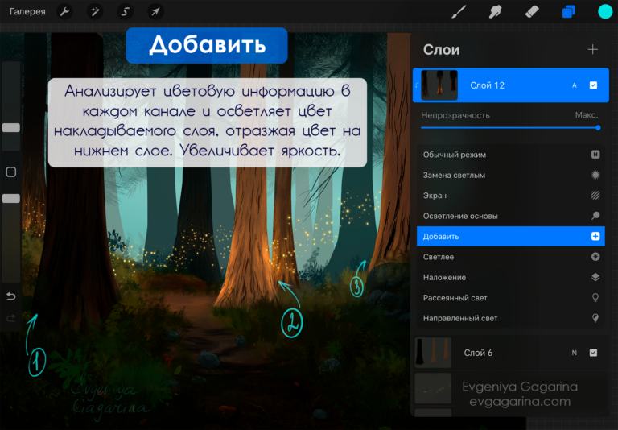
Светлее
Берёт самые светлые пиксели из двух слоёв без смешивания, не давая свечения. Подходит для мягких переходов без яркой засветки.
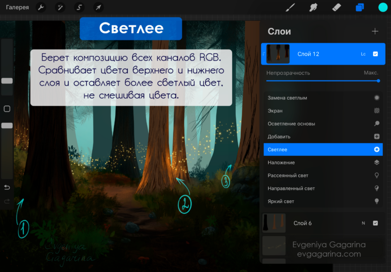
Эту иллюстрацию мы рисуем в курсе
В практическом курсе по Procreate разбираем все функции программы в процессе рисования и создаём анимацию с помощью ассистента анимации.
Контрастные режимы
Хорошо подходят для ярких эффектов и текстур.
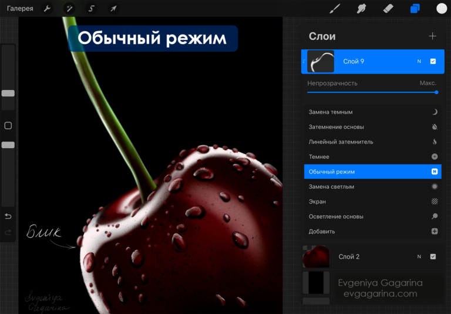
Перекрытие
Комбинация «Умножения» и «Экрана»: светлые цвета осветляют, тёмные затемняют, средне-серый (#808080) ничего не меняет. Рисуйте белой кистью для высветления и чёрной для затемнения. Положите текстуру бумаги сверху в этом режиме, и иллюстрация будет выглядеть как на бумаге.
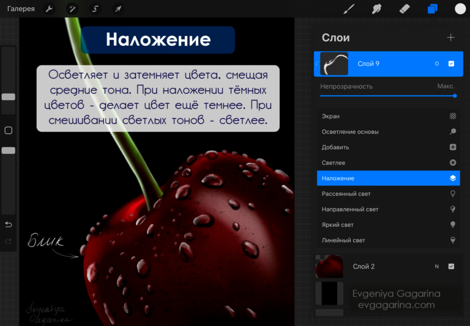
Рассеянный свет
Работает как «Перекрытие», но мягче. Используется для тонкой коррекции света и теней и деликатных бликов, например в портретах.
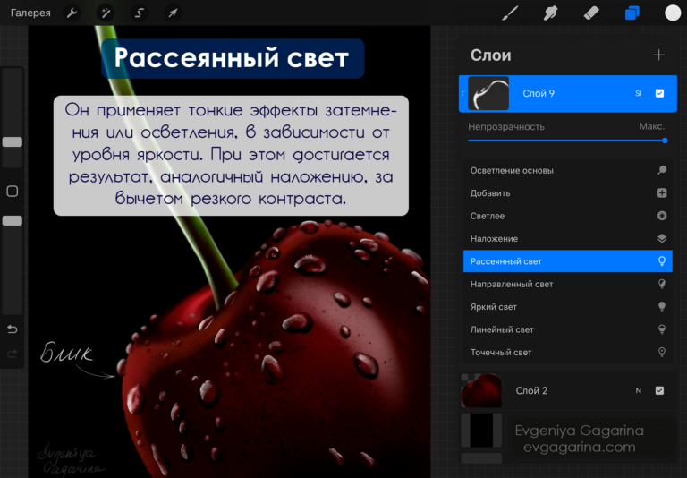
Направленный свет
Агрессивнее и контрастнее: цвета светлее 50% серого работают как «Экран», темнее — как «Умножение». Даёт жёсткие блики и тени. Чтобы кожа на портрете сияла, нанесите белый на щёки и лоб и отрегулируйте непрозрачность.
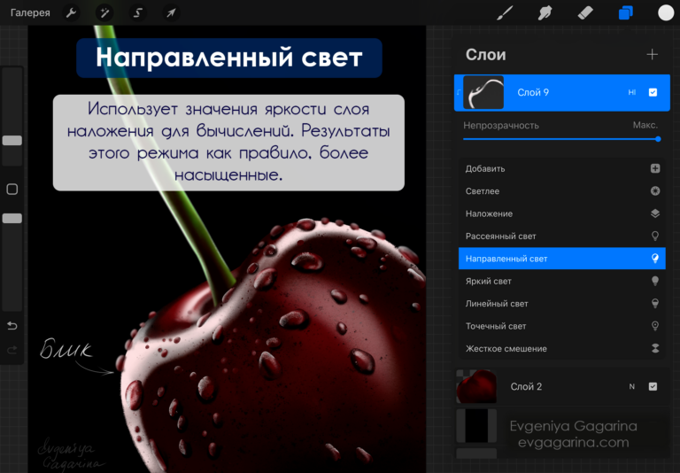
Яркий свет
Резко усиливает контраст: осветляет светлое и затемняет тёмное, меняя насыщенность. Подходит для световых акцентов, сияния, неона и фантастической стилистики.
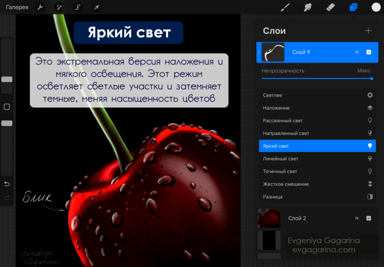
Линейный свет
Осветляет или затемняет линейно, в зависимости от яркости цвета. Даёт контролируемую работу со светом и тенью, точный баланс освещения.
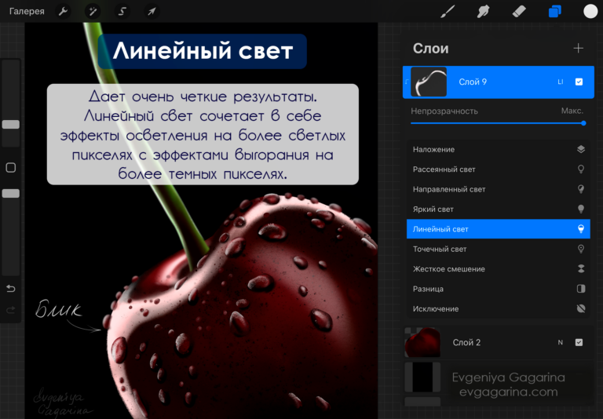
Точечный свет
Заменяет пиксели в зависимости от яркости, оставляя средние тона нетронутыми. Подходит для экспериментальных текстур, постеризации, коллажей и абстракций.
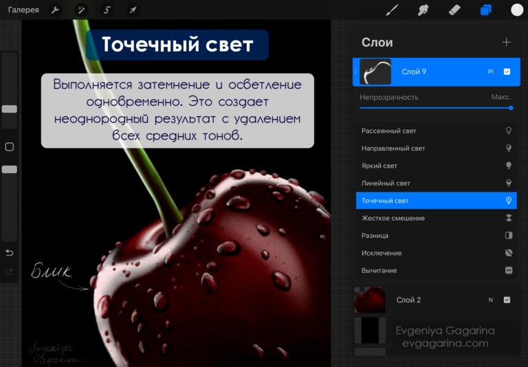
Жёсткое смешение
Оставляет только основные цвета RGB, CMY, белый и чёрный, с резкими переходами между ними. Подходит для поп-арта, комиксов и неона, а при низкой непрозрачности — для усиления цвета.
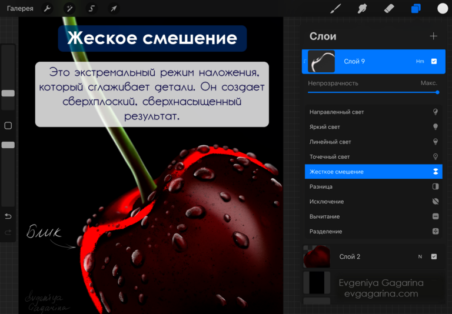
Инвертирующие режимы
Сравнивают цвета верхнего и нижнего слоя и создают эффект вычитания или инверсии.
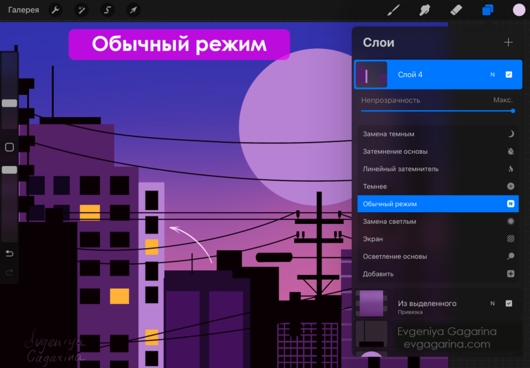
Разница
Вычитает цвета: чёрный ничего не меняет, белый полностью инвертирует, промежуточные дают неоновую смесь. Подходит для киберпанка, глитча и экспериментальной цветокоррекции.
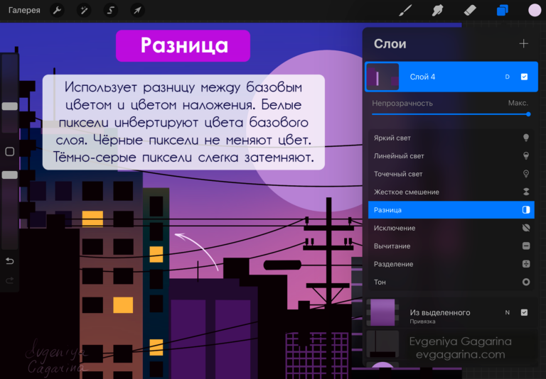
Исключение
Похож на «Разницу», но мягче: средне-серый даёт сероватый эффект вместо резкого контраста. Подходит для бликов с необычными оттенками и переходов в градиентах.
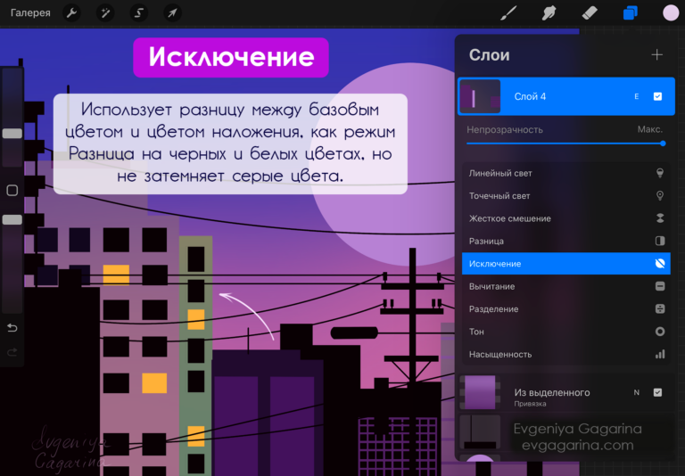
Вычитание
Чем ярче цвет верхнего слоя, тем сильнее затемнение; белый превращает пиксели в чёрный. Подходит для драматичных теней и мрачных, готических эффектов.
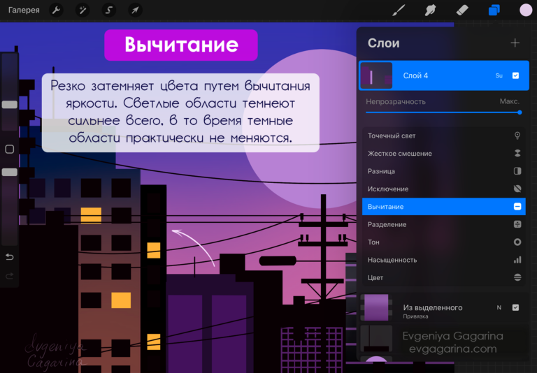
Цветовые режимы
Управляют оттенком, насыщенностью и яркостью изображения.
Тон
Берёт оттенок верхнего слоя, сохраняя яркость и насыщенность нижнего. Объём, тени и текстуры остаются — удобно перекрашивать одежду, волосы, глаза и фон.
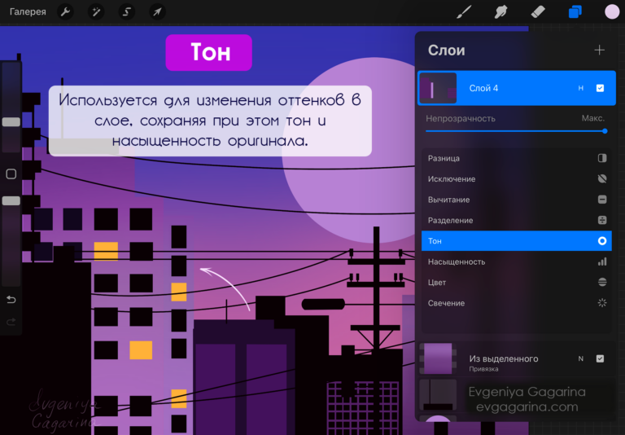
Насыщенность
Берёт насыщенность верхнего слоя, сохраняя оттенок и яркость нижнего. Помогает сделать картинку живее или, наоборот, монохромной.
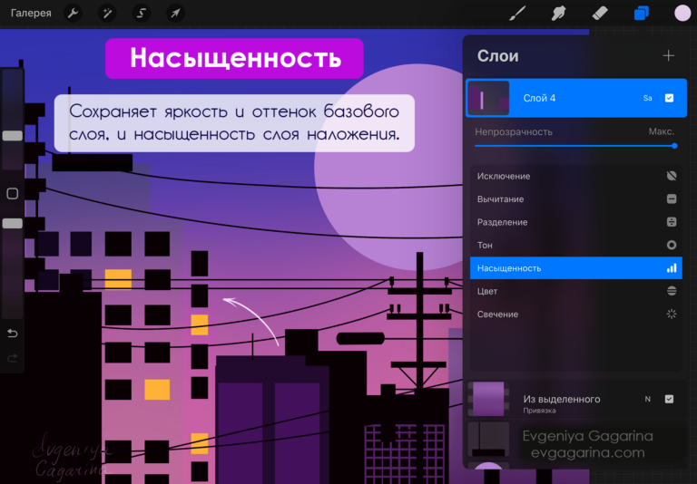
Цвет
Заменяет оттенок и насыщенность нижнего слоя, сохраняя его яркость и светотеневой рисунок. Отлично подходит для смены палитры и точной коррекции мягкими кистями.
Свечение
Заменяет яркость нижнего слоя, сохраняя оттенок и насыщенность. Подходит для перламутровых и светящихся эффектов, имитации золота и неона.
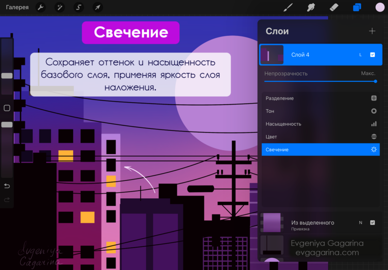
Понимание режимов наложения расширяет творческие возможности при любом уровне опыта. Но теории мало — применяйте эти знания, когда рисуете, и возвращайтесь к статье, чтобы попрактиковаться.
Похожие записи